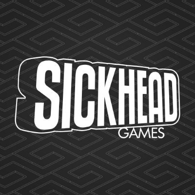

(1.0) What is Vanilla Remastered?
Vanilla Remastered is a user contributed modpack created by the users for the users. Primarily focusing on optimizations, textures, and additional plugins. Our goal here at Vanilla Remastered is bringing the best of the originality of a game out without a handful of modifications. From new to old we try our best to cover them all!
(2.0) What games are currently available?
| # |
Game |
Publisher |
Latest Version |
Client Supported |
Support Thread |
| 1 |
Grand Theft Auto: San Andreas |
Rockstar Games  |
1.4.0 |
Yes! |
Official thread! |
| 2 |
Stardew Valley |
Eric Barone and Stickhead games  |
1.0.0 |
No! |
Official thread! |
| 3 |
Grand Theft Auto: Vice City |
Rockstar Games |
1.0.0 |
No! |
Official thread! |
(2.1) How can stay in tune with upcoming releases?
- to be added.
(3.0) What is GTA Auto Updater? - The client (app) will be making sure that you're up to date with the latest release of Vanilla Remastered for GTA series.
(3.1) Why? - We are planning a lot of updates in the future and manually downloading every single patch & fix is painful..
(3.2) What are some features that the app offers?
The client (application) will assure that you're up to the newest version of Vanilla Remastered.
We're planning on releasing a lot of updates and patches periodically throughout the future and manually downloading each is ever so painful. We created something to do it at a breeze!
The application will assure you're up to the newest version of Vanilla Remastered.
Features a light/dark material theme look to it for our minimalism style.
A FPS Counter (which is experimental)
An on-board FPS displayer compared to using a CLEO or an ASI.
Allows easier troubleshooting and error reporting.
(3.3) How can I install?
Download the zipped file from the link bellow and extract it somewhere. Keep in mind that all files must be inside one folder in order the app to be functional. Our recommendation is to place it under your main partition (e.g C drive)
(3.4) Windows thinks the app is a malware!
We assure you, application doesn't have any malicious intentions. The code is open source and anyone can review it!
 (3.5) How can I join the Client project?
(3.5) How can I join the Client project?
Email us at careers@vanilla-remastered.com!